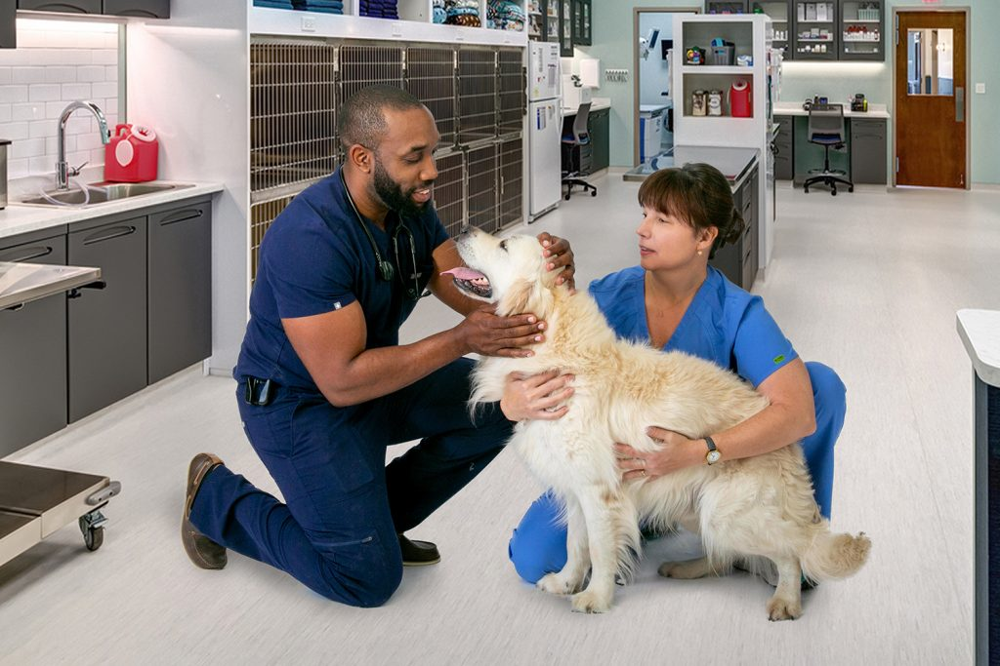

|
Los principales atractores de PetVida Care radican en su enfoque integral y personalizado para el
cuidado de las mascotas, combinando tecnología de punta con un equipo de veterinarios altamente
capacitados. Ofrecen servicios especializados como diagnóstico avanzado, cirugías complejas, y
medicina preventiva, lo que garantiza una atención de calidad en cada visita. Además, su
compromiso con el bienestar animal va más allá de la clínica, con programas comunitarios de
adopción, vacunación y esterilización. La atención cálida y profesional, junto con instalaciones
modernas y un enfoque centrado en el bienestar físico y emocional de las mascotas, hace que
PetVida Care sea la opción preferida para dueños de mascotas en El Salvador.
|
-
-
-

-

|